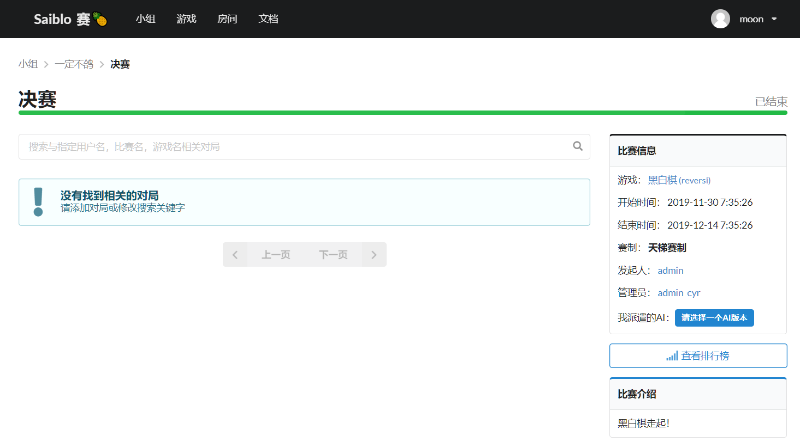
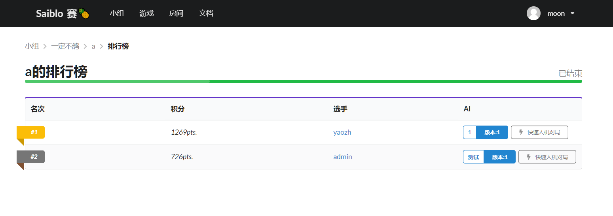

网站前端-比赛系统
group/_slug/contest/_id.vue
| 参数 | 值 |
|---|---|
| 地址 | /group/<group id>/contest/<contest id> |
| 用途 | 查看group id小组下属的编号为contest id的比赛 |
| 权限 | 登录用户 |
| 预览 |  |
| 属性 | 解释 |
|---|---|
| caution | 切换我派遣的AI时，会弹出弹窗警告切换AI版本有扣分惩罚，caution用于绑定弹窗的数据 |
| contest | 比赛的详细信息，使用asyncData获取值 |
| contest.game | 比赛使用的游戏的信息 |
| contest.group | 比赛所属的小组的信息 |
| contest.entity | 在比赛中本用户派遣的ai |
| 函数 | 参数 | 返回值 | 解释 |
|---|---|---|---|
| total/progress | null | null | 用于维护比赛的进度条 |
| getTime | 以ms为单位的时间 | 可读时间表示 | 转换时间表示方法 |
| updateTime | null | null | 在vue生命周期的create阶段创建计时器，每隔1s计时器响应一次，并调用updateTime，用于根据时间维护未开始/进行中/已结束的比赛状态 |
| selectCode | 代码分支对象 | null | 选择AI的版本进行派遣 |
| cancelCode | 比赛对象 | null | 向服务器发送请求取消该比赛派遣的AI |
| openCaution | 警告文本 | null | 如果已经派遣了AI，在更换AI时会弹出排行榜降分警告 |
| 依赖部件 | 传入部件参数 |
|---|---|
| codeSelector | 比赛名，用户名，游戏，原始AI版本等数据 |
group/_slug/contest/_slug_/ranklist.vue
| 参数 | 值 |
|---|---|
| 地址 | /group/<group id>/contest/<contest id>/ranklist |
| 用途 | 查看group id小组下属的编号为contest id的比赛的排行榜 |
| 权限 | 登录用户 |
| 预览 |  |
| 属性 | 解释 |
|---|---|
| timer_ | 定时器，每隔1s更新一次 |
| contest | 该排行榜对应的比赛的详细信息，使用asyncData获取值 |
| players | 排行榜中每个玩家的信息，包括得分，username，AI分支和版本号 |
| 函数 | 参数 | 返回值 | 解释 |
|---|---|---|---|
| getTime | 以ms为单位的时间 | 可读格式的时间表示 | 转化时间格式为可读表示 |
| updateTime | null | null | 计时器更新时调用，更新当前时间，主要用于已结束/进行中/未开始的比赛状态维护 |
| updateRanklist | null | null | 向服务器发送请求更新当前的排行榜，原本设计成定时更新，后来舍弃 |
| 依赖部件 | 传入部件参数 |
|---|---|
| ranklist | players，当前排行榜的数据 |